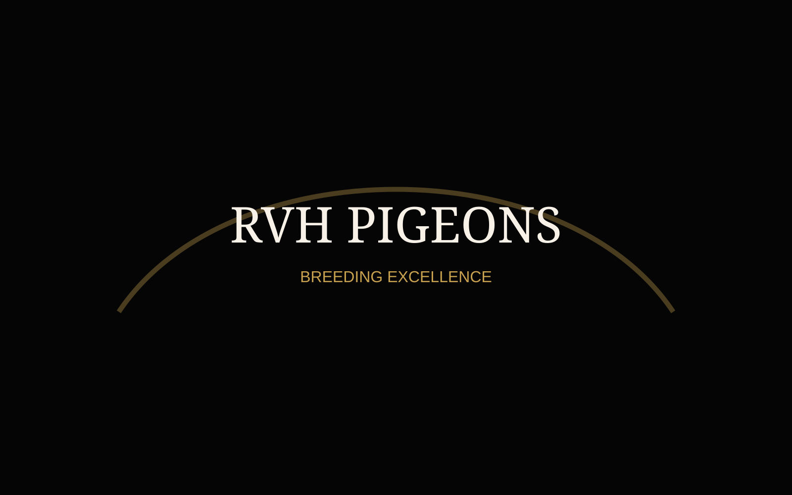

Voorbeeld
Referentiefoto
Deze voorlopige afbeelding kun je later vervangen door een foto van een winnende duif, liefhebber of trofee.
Resultaten met RVH Pigeons
De grootste voldoening is wanneer andere liefhebbers succesvol zijn met duiven uit de RVH Pigeons-kweekbasis.
Onze ambitie
Deze pagina wordt opgebouwd als verzamelplaats voor resultaten, referenties en prestaties van liefhebbers die met duiven of nakomelingen uit de RVH Pigeons-lijnen spelen.
In de startfase tonen we hieronder enkele voorbeeldblokken. Later kunnen deze eenvoudig vervangen worden door echte resultaten, foto’s, namen en wedstrijden.

Deze voorlopige afbeelding kun je later vervangen door een foto van een winnende duif, liefhebber of trofee.
Gebruik deze opbouw later voor echte prestaties van liefhebbers die met RVH Pigeons-duiven spelen.

Liefhebber: Naam liefhebber
Plaats: België
Duif: Nakomeling RVH Pigeons

Liefhebber: Naam liefhebber
Wedstrijd: One Loft Race
Duif: RVH-lijn

Liefhebber: Naam liefhebber
Seizoen: 2026
Lijn: Leideman / Eijerkamp
Hier kun je later per liefhebber een volledig blok maken met foto, naam, locatie en prestaties.

Locatie: Provincie / gemeente
Korte tekst over de liefhebber, de duif uit RVH Pigeons en waarom dit resultaat belangrijk is.

Locatie: Provincie / gemeente
Hier komt later een echte referentie met foto’s van de duif, het resultaat en eventueel een korte quote.
Locatie: Land / OLR
Deze kaart kan later gebruikt worden voor internationale prestaties of One Loft Race-resultaten.
Hall of Fame
Naarmate RVH Pigeons groeit, wordt deze pagina aangevuld met echte resultaten, winnaarsfoto’s, reportages en referenties van liefhebbers.
Heb jij gespeeld met RVH-bloed?
Heb je een mooi resultaat behaald met een duif uit de RVH Pigeons-bloedlijnen? Dan mag je altijd contact opnemen met foto’s en wedstrijdinformatie.
Resultaat doorgeven